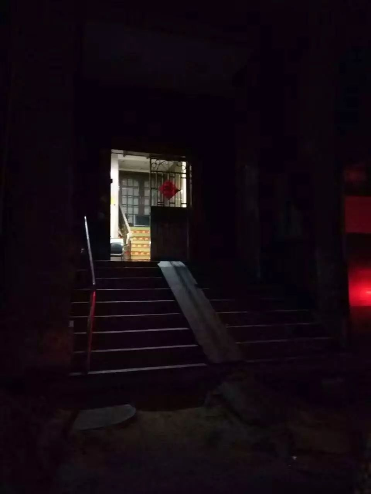

照片征集︱“你们看我们看自己”

在一次“平凡人摄影展”里，我看到了一个摄影作品。这个作品让我会心一笑，也让我忍不住用手机记录了下来：
· 我的家庭（作者：燕子）
直至如今，回看这幅简单的照片的时候，我仍能从中感受到背后的力量。这种力量与摄影技术、画面美感无关，而是来源于拍摄者对于家庭的“另类”理解所透露出的自由、来源于其血肉丰盈的生活姿态。而我也从自己那不自觉的笑中，体会到了某种基于同志身份的深刻连结。

你们看我们看自己
用自己的眼去记录同志的生活经验，是这个照片的独特之处。如今，以同志为题材的影像与传媒作品有许多，有的呈现了扭曲而刻板的形象，而刻画得鲜活丰满的也不少。然而，这幅作品却让我思考，若把镜头交由同志，替代他人的眼，拍摄个人的生活，照片会是如何？而这背后，是否有着特殊的含义？
观看与被观看是一种微妙的关系。观看的人处于主导的位置；而被观看者在他人的凝视下，不由自主的展现出他人所期待的形象。而当作为同志的自己，拍摄我们个人的生活时，我们不单单只是一个记录者，还是一个书写自身的主体，对自己有更清晰更自觉的认识。
因此，我们诚邀你回顾过往所拍摄过的一切照片，做一次往事的半日游，重温一下在记录个人经验的欲望驱动下，我们以照片的形式保存下来生活的暗流涌动，并用最朴素直接的语言，说出在这幅照片背后，所能反映出的你对自身、对生活以及这个世界的理解。
此次照片征集活动，入选照片将会在酷儿论坛正在筹备的五月份展览中展出。我们希望通过这些照片，让到场者借同志自己的视角，看见同志鲜活多元的生活姿态，并通过最日常最普通的影像连结彼此。


身份如何影响与组成了我们的生活？
然而，值得思考的是，分享同志鲜活多元的生活姿态，并不意味着，照片所反映的我们对自身与世界的理解只能是围绕着“性少数”这一单一的身份的。让我开始思考这个事情的，是关于C君的故事。C君曾与我在同一家同志机构里实习，实习期满后，她去了一家环保公益机构工作。有一次，在好奇之下，我问她，你觉得双性恋是你的一个重要的身份吗？她犹豫了一下，回答我说：不是的，尤其是换了机构工作之后，新的领域会给你全新的视角与观察的侧重点。
这让我不得不去思考，到底我们的身份是如何影响与组成我们的个人生活的？性少数这个身份到底多大程度上影响了我们看待自身与这个世界的方式呢？
当我回望自己的生活的时候，我能看到女同性恋这个身份确实带给了我许多影响，它让我看到了性别是一个光谱，意识到传统文化对我个人与家庭的束缚。但同时，我又意识到我的生活是复杂、交叉的、多重的，而同志这个身份真的仅仅只是其中细微的一部分：公益行动者的身份主宰着我生活的痛苦、焦虑、怀疑与欢乐，而“城市人”这一身份让我从小享有更好的教育资源、公共基础设施，也影响着我对“美好生活”的认知与期待，只是这种身份作为一种特权从来未被我所感知。而当我不再将同志身份作为我看待自身与社会的唯一纬度时，我反而看到真实的生活姿态、感受到了身份的解放。
因此，这次照片征集的主题不仅限于拍摄者从性少数这一单一维度出发。我们只期待你所分享的照片与自述能够让我们体会到你对自身的觉察、对生命的体悟，而个人经验的集合能够最终折射出同志群体最真实的生活状态。

活动详情
征集对象︱自我认同为LGBTQ的伙伴
照片︱拍摄于以往；不要求画面、构图完美、精致；所拍摄的内容不限，可为个人生活、风景、日常生活事物等等
文字︱每张照片配文建议在100字以内，但不设上限，欢迎你尽情表达与书写
署名︱不要求实名，可自由拟定任意你喜欢的名字
大小︱考虑观展效果，照片大小请尽量大于1M
数量︱无上限，欢迎用照片来砸我~
奖励︱ 入选2张照片者，即可获得免费观展的机会与神秘礼品一件（市内参与者可到展览现场领取，杭州市外一律邮寄）
征集有效时间︱2017年4月6日至4月24日24：00前

征集方式
1、扫描以下二维码添加好友
直接将照片及文字内容传送至此微信号
（添加好友时备注照片征集活动）
2、点击文末“阅读原文”
进入灵析页面上传照片即可
*版权声明：投稿即授权主办方于现场展览及线上传播使用
**感谢所有提供照片与配文的朋友！

为了打消大家对照片门槛的顾虑，以及让大家对活动的意涵有更直观的了解，我们邀请了身边的朋友分享ta们的照片与叙述。希望有幸在未来也能看到大家的分享！
｢照片里左边是我的哥哥，右边是前女友。当时我们仨在家里谈笑风生，看电影，聊哲学，听古典……拍这张照片两星期后，家人怀疑女友有同性恋倾向，让我保证和她断绝来往，不再联系。考虑到父母年过六十，承受能力有限，当时不得不答应了。虽然现在还是和前女友保持朋友关系，可这样的场景，不会也不可能再有了。｣
——陈大大


｢某个晚上洗完澡之后，我在房间里随意自拍。虽然拍照时我没有化妆，也没有穿上好看的衣服，但是看到照片的那一刻，我却非常喜欢：因为这是我的私密空间。在这里，我是我自己。我不是别人眼里的双性恋，也不是必须要“保持身材”的女性。我热爱自己扁平的胸部，并不在意它有一天会下垂。｣
——Truman


｢晚上扶一个陌生的老人家回家。老人家脚没有力气，身体后倾，只能一步步慢慢挪。走几步歇一会，所以路上我们有大把的时间聊天。他乐意回忆起他年轻的足球运动员生活，我则更关心他为什么没有拐杖有没有请保姆。他说一个人的生活很单调但没办法，我说我不太想结婚。
送走他后，我去拿冲洗出来的全家福。｣
——C君


｢搬离前的一个晚上，我在乐窝门口拍下了这张照片。坑洼的地面，阴暗的楼道，破旧的电梯，还有老鼠做伴。一切希望都从这里孕育，一切苦难都在这里见证。｣
——孟羽

｢广州番禺的工业区，跟市区的风格很不一样，粗糙脏乱，来自各地的人，很多摆地摊，很多工厂，却让我感到一种旺盛的生命力。｣
——陈皮
文/ Sisyphus
编辑/文文
海报/Sisyphus
主办机构/杭州酷儿论坛